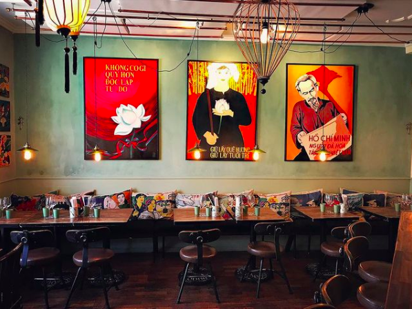

Fokus på vällagade traditionella och moderna rätter från det vietnamesiska köket med betoning på riktigt bra streetfood och ett rikt utbud av vegetariska rätter. Bra råvaror, god öl och ekologiska viner. Minh mat är din mat!
- vegokartan.se -

En av Stockholms bästa asiatiska krogar utvalda råvaror och äkta smaker får kroggäster att åka tvärs över stan för att äta på vietnamesiska Minh mat i Vasastan.
- svd.se -

Minh Mat rekommenderas av Star Wine List, guiden till de bästa vin-restaurangerna i Stockholm.
- Wine Star List -

Följ oss på Instagram
Adress